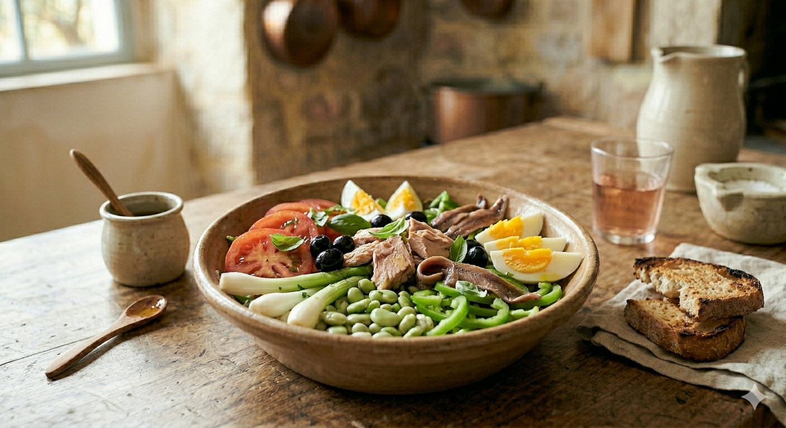

La Salade Niçoise est un trésor de fraîcheur. C'est l'assemblage parfait des plus beaux légumes crus de l'été, relevé par la force de l'anchois et la finesse du thon. C'est simple, mais cela demande de la rigueur : ici, on ne triche pas avec la tradition.

PAS de pommes de terre !
PAS de haricots verts !
Que des légumes CRUS (sauf les œufs d'ici) !
Rétablissons la vérité : la niçoise est une ode au croquant.
1. La Base Légumière : Lavez les légumes. Coupez les tomates en quartiers et émincez finement les cèbetes (blanc et un peu du vert). Coupez le poivron vert en très fines lanières.
2. Le Croquant : Écossez les févettes. Dans un grand plat large (plutôt qu'un saladier profond), disposez harmonieusement les tomates, les oignons et le poivron.
3. Le Dressage Final : Répartissez les févettes crues, le thon émietté, les filets d'anchois et les œufs durs. Parsemez d'olives de Nice.
4. Le Service : Au dernier moment, ciselez le basilic frais à la main sur le plat. Préparez la vinaigrette et servez-la à part. Ne mélangez pas le plat pour préserver la beauté et la texture de chaque ingrédient.